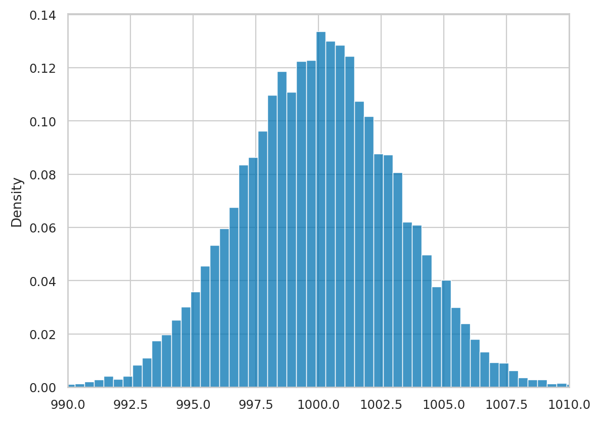
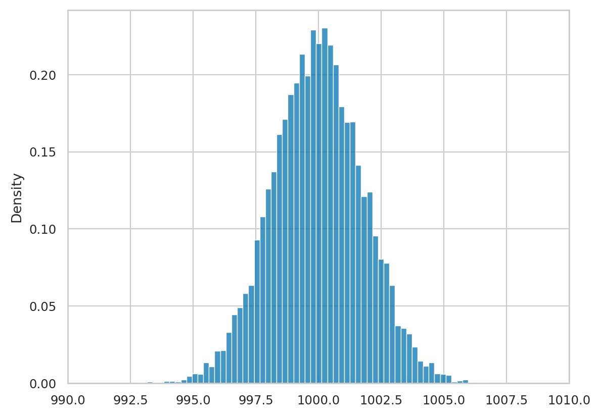
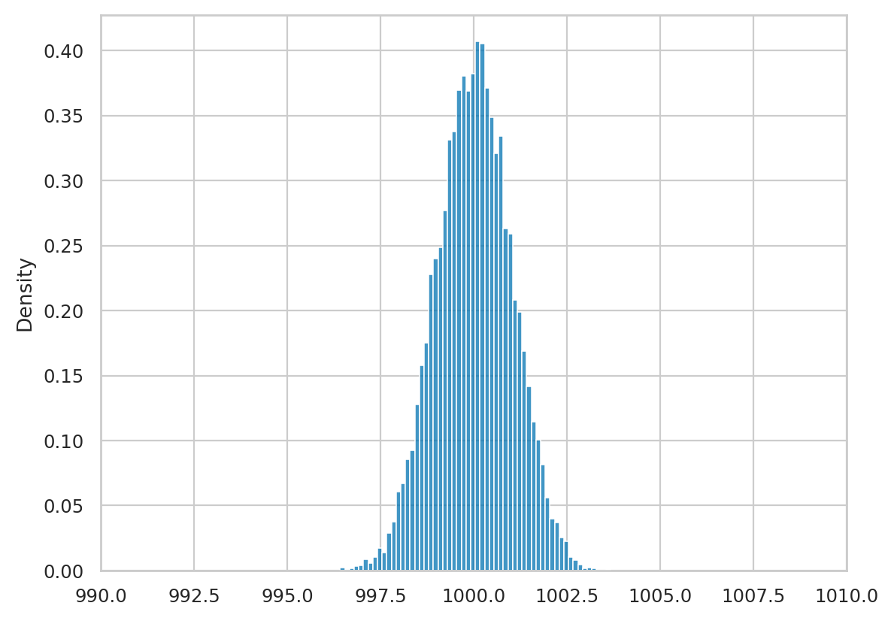
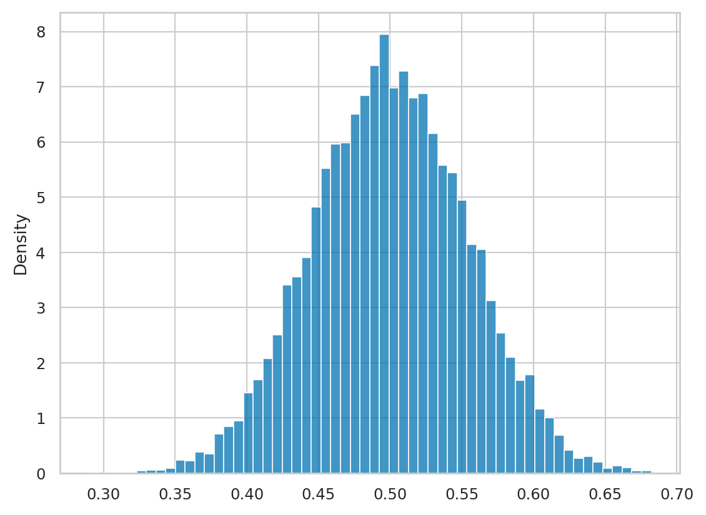
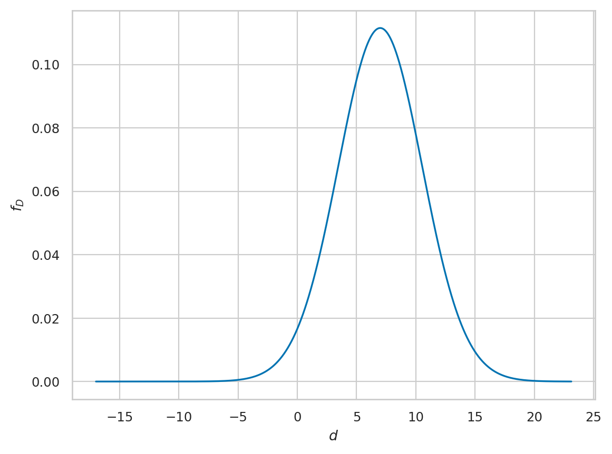

Exercises for Section 3.1 Estimates and estimators#
This notebook contains the solutions to the exercises from Section 3.1 Estimates and estimators in the No Bullshit Guide to Statistics.
Notebooks setup#
# Ensure required Python modules are installed
%pip install --quiet numpy scipy seaborn pandas ministats
Note: you may need to restart the kernel to use updated packages.
import os
import numpy as np
import pandas as pd
import matplotlib.pyplot as plt
import seaborn as sns
# Figures setup
plt.clf() # needed otherwise `sns.set_theme` doesn't work
sns.set_theme(
context="paper",
style="whitegrid",
palette="colorblind",
)
%config InlineBackend.figure_format = "retina"
<Figure size 640x480 with 0 Axes>
# Simplified int and float __repr__
import numpy as np
np.set_printoptions(legacy='1.25')
# Pandas display options
pd.set_option("display.precision", 2)
# Download datasets/ directory if necessary
from ministats import ensure_datasets
ensure_datasets()
datasets/ directory already exists.
Exercises 1#
E3.1#
Compute the sample mean of the volume measurements
from Batch 04 of the kombucha dataset
datasets/kombucha.csv.
# Load the kombucha dataset
kombucha = pd.read_csv("datasets/kombucha.csv")
# Select the volume measurements from Batch 04
ksample04 = kombucha[kombucha["batch"]==4]["volume"]
# Compute the mean volume in Batch 04
ksample04.mean() # = mean(ksample04)
1003.8335
E3.2#
Compute the sample variance
from Batch 02 and Batch 08 of the kombucha dataset
datasets/kombucha.csv.
# Load the kombucha dataset
kombucha = pd.read_csv("datasets/kombucha.csv")
# Select Batch 02 from the kombucha dataset
ksample02 = kombucha[kombucha["batch"]==2]["volume"]
# Compute its variance
ksample02.var() # = var(ksample02)
124.31760105263139
# Select Batch 08 from the kombucha dataset
ksample08 = kombucha[kombucha["batch"]==8]["volume"]
# Compute its variance
ksample08.var()
169.99792205128236
E3.3#
Compute the difference between mean sleep scores
of the doctors working in a rural (rur) location
and doctors working in an urban (urb) location
in the doctors dataset
datasets/doctors.csv.
# Load the doctors dataset
doctors = pd.read_csv("datasets/doctors.csv")
# Select doctors from "rur" location and get the `score` variable
scoresR = doctors[doctors["loc"]=="rur"]["score"]
# Select doctors from "urb" location and get the `score` variable
scoresU = doctors[doctors["loc"]=="urb"]["score"]
# Compute difference between mean scores
scoresR.mean() - scoresU.mean()
6.992885375494076
# ALT.
# Define the `dmeans` estimator function
def dmeans(xsample, ysample):
dhat = np.mean(xsample) - np.mean(ysample)
return dhat
# Call `dmeans` to compute difference between mean scores
dmeans(scoresR, scoresU)
6.992885375494076
Exercises 2#
E3.4#
Generate \(N=10\,000\) observations
from the sampling distribution of the estimator std
for samples of size \(n=20\)
from the kombucha population \(K \sim \mathcal{N}(1000,10)\).
Plot a histogram.
Hint: Use the ministats function gen_sampling_dist.
# Define the standard deviation estimator function
def std(sample):
xbar = sum(sample) / len(sample)
sumsqdevs = sum([(xi-xbar)**2 for xi in sample])
return np.sqrt(sumsqdevs / (len(sample)-1))
# Create a computer model for the kombucha population
from scipy.stats import norm
muK = 1000 # population mean
sigmaK = 10 # population standard deviation
rvK = norm(muK, sigmaK)
# Set the random seed to a particular value to get a reproducible result
np.random.seed(42)
# Generate observations from the sampling distribution of `std`
from ministats import gen_sampling_dist
kstds20 = gen_sampling_dist(rvK, estfunc=std, n=20, N=10000)
kstds20[0:5]
[9.60028421439027,
9.680387092176915,
8.208476944118853,
11.120875642249183,
6.908107201543384]
import seaborn as sns
# Plot histogram of the sampling distribution `kstds20`
sns.histplot(kstds20);
{kind=link}
E3.5#
Generate the sampling distributions of the estimator mean
for samples of size \(n=10\), \(n=30\), and \(n=100\)
from the kombucha population \(K \sim \mathcal{N}(1000,10)\).
Plot a histogram for each distribution
and compute its standard deviation.
# Create a computer model for the kombucha population
from scipy.stats import norm
muK = 1000
sigmaK = 10
rvK = norm(muK, sigmaK)
# Set the random seed to a particular value to get a reproducible result
np.random.seed(43)
# Simulations of `xbars` for different sample sizes
xbars10 = gen_sampling_dist(rvK, estfunc=np.mean, n=10)
xbars30 = gen_sampling_dist(rvK, estfunc=np.mean, n=30)
xbars100 = gen_sampling_dist(rvK, estfunc=np.mean, n=100)
# Plot the histogram obtained from the n = 10 simulation
ax = sns.histplot(xbars10, stat="density")
ax.set_xlim([990,1010])
# Compute the standard deviation of the sampling distribution
np.std(xbars10)
3.1344252181165833
{kind=link}

# Plot the histogram obtained from the n = 30 simulation
ax = sns.histplot(xbars30, stat="density")
ax.set_xlim([990,1010])
# Compute the standard deviation of the sampling distribution
np.std(xbars30)
1.8051604416489098
{kind=link}

# Plot the histogram obtained from the n = 100 simulation
ax = sns.histplot(xbars100, stat="density")
ax.set_xlim([990,1010])
# Compute the standard deviation of the sampling distribution
np.std(xbars100)
0.9982856344634795
{kind=link}

E3.6#
Simulate the sampling distribution of the mean for samples of size \(n=30\) from the standard uniform distribution \(U \sim \mathcal{U}(0,1)\). Plot a histogram and calculate the standard error \(\stderr{\overline{\mathbf{u}}}\).
# Create a computer model for the standard uniform
from scipy.stats import uniform
rvU = uniform(0,1)
# Set the random seed to a particular value to get a reproducible result
np.random.seed(44)
# Simulate sampling distribution for samples of size n = 30
ubars30 = gen_sampling_dist(rvU, estfunc=np.mean, n=30)
# Plot the histogram obtained from simulation
sns.histplot(ubars30, stat="density")
# Compute the standard error (standard deviation of the sampling distribution)
np.std(ubars30)
0.053696970885011554
{kind=link}

Exercises 3#
E3.7#
Use the apples dataset
datasets/apples.csv
and bootstrap estimation
to approximate the sampling distribution of the mean for samples of size \(n=30\) from the apples population
and calculate the bootstrap standard error \(\stderrhat{\overline{\mathbf{a}}}^*\).
Based on your result,
describe the accuracy of the estimate \(\overline{\mathbf{a}} = 202.6\)
for the population mean \(\mu_A\).
Hint: Use gen_boot_dist to generate the bootstrap distribution.
# Load the apples dataset
apples = pd.read_csv("datasets/apples.csv")
asample = apples["weight"]
# Set the random seed to a particular value to get a reproducible result
np.random.seed(46)
# Generate the bootstrap distribution of the mean
from ministats import gen_boot_dist
abars_boot = gen_boot_dist(asample, estfunc=np.mean)
# Plot a histogram of the bootstrap distribution
sns.histplot(abars_boot, stat="density");
{kind=link}
# Compute the standard deviation of `abars_boot`
np.std(abars_boot)
3.3281116130856487
The standard error \(\stderrhat{\overline{\mathbf{a}}}^* = 3.33\) gives us an indication of the accuracy of the estimate for the population mean \(\overline{\mathbf{a}} \approx \mu_A\). We can write our estimate plus or minus the \emph{margin of error} \(\overline{\mathbf{a}} \pm \stderrhat{\overline{\mathbf{a}}}^* = 202.6 \pm 3.33\).
E3.8#
Generate the bootstrap distribution for the mean from Batch 04 of the kombucha dataset and compute its standard error \(\stderrhat{\overline{\mathbf{k}}_{04}}^*\). Plot a histogram of the bootstrap distribution. Based on the observed sample mean \(\overline{\mathbf{k}}_{04}\), the bootstrap standard error \(\stderrhat{\overline{\mathbf{k}}_{04}}^*\), and the histogram, do you think Batch 04 is a regular production batch?
Hint: Recall that regular kombucha batches have \(\mu_K = 1000\).
# Select Batch 04 from the kombucha dataset
kombucha = pd.read_csv("datasets/kombucha.csv")
ksample04 = kombucha[kombucha["batch"]==4]["volume"]
ksample04.mean()
1003.8335
The mean of computed from the sample 04 is \(\overline{\mathbf{x}}_{04} = 1003.8335\), which is higher than expected from a regular batch (\(\mu_K = 1000\)).
# Set the random seed to a particular value to get a reproducible result
np.random.seed(47)
# Generate the bootstrap distribution of the mean
from ministats import gen_boot_dist
kbars04_boot = gen_boot_dist(ksample04, estfunc=np.mean)
# Compute the standard deviation of `kbars04_boot`
np.std(kbars04_boot)
1.2364488755043346
# How far is the sample mean from the expected mean mu_K = 1000 ?
(ksample04.mean() - 1000) / np.std(kbars04_boot)
3.100411247037055
# Plot a histogram of the bootstrap distribution
sns.histplot(kbars04_boot, stat="density");
{kind=link}
When we take into account of the possible variability in the estimate \(\overline{\mathbf{k}}_{04} = 1003.8\), we see that it is very far from the expected mean \(\mu_K = 1000\). This means the Batch 04 is likely not regular batch: the volume in this batch is higher than expected for regular batches \(\mu_K = 1000\).
Exercises 4#
E3.9#
Describe the uncertainty about the unknown population mean \(\mu_A\) based on the sample of apple weights \(\mathbf{a}\) from the apples dataset.
a) Describe the uncertainty about \(\mu_A\) by generating the bootstrap distribution from the sample \(\mathbf{a}\).
b) Describe the uncertainty using Student’s \(t\)-distribution centred at \(\overline{\mathbf{a}}\), with scale \(\stderrhat{\overline{\mathbf{a}}} = \frac{s_{\mathbf{a}}}{\sqrt{n}}\), and \(\nu = n -1\) degrees of freedom.
c) Compare your answers from part a) and b) graphically.
# Load the apples dataset
apples = pd.read_csv("datasets/apples.csv")
asample = apples["weight"]
# a)
# Set the random seed to a particular value to get a reproducible result
np.random.seed(50)
# Obtain the bootstrap distribution of the mean
from ministats import gen_boot_dist
abars_boot = gen_boot_dist(asample, estfunc=np.mean)
# Plot a histogram of the bootstrap distribution
sns.histplot(abars_boot, stat="density");
{kind=link}
# b)
# Calculate the estimated standard error
n = len(asample)
sehatAbar = asample.std() / np.sqrt(n)
# Build a model for the uncertainty in the population mean
from scipy.stats import t as tdist
df = n-1
loc = asample.mean()
scale = sehatAbar
rvTAbar = tdist(df, loc=loc, scale=scale)
# Plot the PDF of the model `rvTAbar`
from ministats import plot_pdf
ax = plot_pdf(rvTAbar)
{kind=link}
# c) Plot of the PDF of the analytical model
# and the bootstrap distribution on the same axis
ax = plot_pdf(rvTAbar)
sns.histplot(abars_boot, stat="density", ax=ax, alpha=0.4);
{kind=link}
Exercises 5#
E3.10#
Under regular operations, the kombucha volume population is described by the model \(K \sim \mathcal{N}(\mu_K\!=\!1000, \sigma_K\!=\!10)\).
a) Construct an analytical model for the sampling distribution of the variance for samples of size \(n=40\) from \(K\).
b) Compute the sample variance \(s_{\mathbf{k}_{08}}^2\) of the kombucha Batch 08.
c) Compare the observed value in b) to the sampling distribution in a). Is Batch 08 a regular batch or an irregular batch?
Hint: Build an analytical model based on the \(\chi^2\) distribution.
# a) Build an analytical model for the sampling distribution of the variance
sigmaK = 10 # population standard deviation
from scipy.stats import chi2
n = 40
df = n - 1
scale = sigmaK**2 / (n-1)
rvS2 = chi2(df, loc=0, scale=scale)
# Plot the PDF of `rvS2`
from ministats import plot_pdf
plot_pdf(rvS2, rv_name="S^2");
{kind=link}
# b) Compute the sample variance of Batch 08
kombucha = pd.read_csv("datasets/kombucha.csv")
ksample08 = kombucha[kombucha["batch"]==8]["volume"]
ksample08.var()
169.99792205128236
c) The observed value \(s_{\mathbf{k}_{08}}^2 = 170\) is very unlikely to occur according to the sampling distribution for regular batches. This suggests that Batch 08 is an irregular batch (abnormally high variance). Better check the bottling machines!
# Plot a vertical line at the observed variance
ax = plot_pdf(rvS2)
ax.axvline(ksample08.var(), color="red");
{kind=link}
E3.11#
Compute the bootstrap approximation for the sampling distribution of the variance from the kombucha Batch 08. Plot a histogram. The expected variance for samples taken from a regular batch is \(\sigma_K^2 = 100\), since the population for regular batches is \(K \sim \mathcal{N}(\mu_K\!=\!1000, \sigma_K\!=\!10)\). Is the expected variance \(\sigma_K^2 = 100\) likely or unlikely according to the bootstrap distribution?
# Define the variance estimator function
def var(sample):
xbar = sum(sample) / len(sample)
sumsqdevs = sum([(xi-xbar)**2 for xi in sample])
return sumsqdevs / (len(sample)-1)
kombucha = pd.read_csv("datasets/kombucha.csv")
ksample08 = kombucha[kombucha["batch"]==8]["volume"]
# Set the random seed to a particular value to get a reproducible result
np.random.seed(54)
# Generate the bootstrap distribution of the variance
from ministats import gen_boot_dist
kvars08_boot = gen_boot_dist(ksample08, estfunc=var, B=5000)
# Plot a histogram of the bootstrap distribution `kvars08_boot`
ax = sns.histplot(kvars08_boot, stat="density")
# Plot a vertical line at the expected variance
ax.axvline(100, color="C1");
{kind=link}
The bootstrap distribution computed from \(\mathbf{k}_{08}\) is centred near \(s_{\mathbf{k}_{08}}^2 = 170\). The expected variance for regular batches \(\sigma_K^2 = 100\) is very unlikely under the bootstrap distribution, which tells us Batch 08 might be irregular.
Exercises 6#
E3.12#
In an earlier exercise, we calculated the difference between mean sleep scores for doctors working in rural and urban locations: \(\hat{d} = 7\). In this exercise, we want to describe the uncertainty in this estimate.
a) Obtain an approximation to the sampling distribution of the difference between means in terms of Student’s \(t\)-distribution centred at \(\hat{d}\), with scale \(\stderrhat{\hat{d}}\), and \(\nu_d\) degrees of freedom.
b) Approximate the sampling distribution using the bootstrap.
c) Compare your answers from part a) and b) graphically.
# Load the doctors dataset and get the "rur" and "urb" scores
doctors = pd.read_csv("datasets/doctors.csv")
scoresR = doctors[doctors["loc"]=="rur"]["score"]
scoresU = doctors[doctors["loc"]=="urb"]["score"]
# observed value
dscores = scoresR.mean() - scoresU.mean()
dscores
6.992885375494076
# a) Analytical approximation
# Obtain the sample sizes and stds for the two groups
nR = len(scoresR)
stdR = scoresR.std()
nU = len(scoresU)
stdU = scoresU.std()
# Compute the standard error of the difference between means
seDhatscores = np.sqrt(stdU**2/nU + stdR**2/nR)
print("Estimated standard error", seDhatscores)
# Calculate the degrees of freedom parameter
from ministats import calcdf
df = calcdf(stdU, nU, stdR, nR)
# Build a probability model based on Student's t-distribution
from scipy.stats import t as tdist
rvDscores = tdist(df, loc=dscores, scale=seDhatscores)
# Plot the PDF of the sampling distribution `rvDscores`
from ministats import plot_pdf
plot_pdf(rvDscores, rv_name="D");
Estimated standard error 3.5671565854251948
{kind=link}

# b) Bootstrap estimate
# Set the random seed to a particular value to get a reproducible result
np.random.seed(51)
# Compute bootstrap estimates for mean in each group
from ministats import gen_boot_dist
meanR_boot = gen_boot_dist(scoresR, estfunc=np.mean)
meanU_boot = gen_boot_dist(scoresU, estfunc=np.mean)
# Compute the difference between means of the bootstrap samples
dmeans_boot = np.subtract(meanR_boot, meanU_boot)
# Plot a histogram of the bootstrap distribution
sns.histplot(dmeans_boot, stat="density");
{kind=link}
# c) Plot of the PDF of the analytical model
# and the bootstrap distribution on the same axis
ax = plot_pdf(rvDscores, rv_name="D")
sns.histplot(dmeans_boot, ax=ax, stat="density")
ax.set_xlabel(r"$\Delta$");
{kind=link}
We see the two models for the uncertainty about \(\Delta = \mu_R - \mu_U\) are very similar.
Exercises 7#
E3.13#
Generate the sampling distribution of the median for samples of size \(n=30\) from the population \(K \sim \mathcal{N}(1000,10)\). Compute the standard error of the sampling distribution of the median.
Hint: You can use np.median as the estimator function.
# Create a computer model for the kombucha population
from scipy.stats import norm
rvK = norm(1000, 10)
# Set the random seed to a particular value to get a reproducible result
np.random.seed(52)
# Compute the sampling distribution of the median (`np.median`)
# for samples of size n=30 from `rvK`
from ministats import gen_sampling_dist
kmedians30 = gen_sampling_dist(rvK, estfunc=np.median, n=30)
# Plot a histogram of the sampling distribution
sns.histplot(kmedians30, stat="density");
{kind=link}
# Compute the standard error of the sampling distribution of the median
np.std(kmedians30)
2.2446814804658617
E3.14#
Generate the sampling distribution of p90,
the 90th percentile estimator,
from samples of size \(n=30\) from \(K \sim \mathcal{N}(1000,10)\).
Calculate the standard error \(\stderr{\texttt{p90}}\) of the p90 estimator.
Hint: Use \(\texttt{np.percentile(}\mathbf{k}\texttt{,90)}\) to compute the 90th percentile of \(\mathbf{k}\).
# Create a computer model for the kombucha population
from scipy.stats import norm
rvK = norm(1000, 10)
# Define the 90th percentile estimator function
def p90(sample):
return np.percentile(sample, 90)
# Set the random seed to a particular value to get a reproducible result
np.random.seed(47)
# Generate the sampling distribution of the `p90`
# for samples of size n=30 from the kombucha population
kp90s30 = gen_sampling_dist(rvK, estfunc=p90, n=30)
# Plot a histogram of the sampling distribution
sns.histplot(kp90s30, stat="density");
{kind=link}
# Compute the standard error of the p90 sampling distribution
np.std(kp90s30)
2.917424577907705
E3.15#
For each of these concepts, explain in your own words what it is and what it is used for: a) estimate, b) estimator, c) sampling distribution of the estimator, d) standard error of the sampling distribution.
The estimate \(\hat{\theta}\) computed from the sample \(\mathbf{x}\) is our “best guess” about the unknown population parameter \(\theta\). We can use the estimate \(\hat{\theta}\) as a substitute for \(\theta\) in statistics formulas (the plug-in principle).
The estimator is the function \(g:\mathcal{X}^n \to \mathbb{R}\) that we use to compute the estimate \(\hat{\theta}\) from the sample \(\mathbf{x}\) of size \(n\).
The sampling distribution of the estimator \(g\) for samples of size \(n\) from the population \(X \sim \mathcal{M}(\theta)\) is the output of the estimator function when the input is an i.i.d random sample \(\mathbf{X} = (X_1,X_2,\ldots,X_n)\), which we can write as \(\widehat{\Theta} = g(\mathbf{X})\). The sampling distribution \(\widehat{\Theta}\) tells us the variability in the \(\hat{\theta}\)-estimates we might expect to observe from random samples of size \(n\). We use the information from the sampling distribution to describe the uncertainty about the estimates we obtain from a particular sample.
The standard error of the estimator \(g\), denoted \(\stderr{g}\) or \(\stderr{\hat{\theta}}\), is the standard deviation of the sampling distribution \(\widehat{\Theta}\). The standard error quantifies the accuracy of the approximation \(\hat{\theta} \approx \theta\). It tells us how “far apart” we can expect the estimates \(\hat{\theta}\) computed from a sample \(\mathbf{x}\) to be from the true population parameter \(\theta\), measured in “standard” units. In Type P tasks, the population parameter \(\theta\) is known, and we use the standard error to judge if an observed estimate \(\hat{\theta}\) has high probability (few standard errors away) or low probability (many standard errors away). In Type E tasks, \(\theta\) is unknown, and we use the sampling distribution centred at \(\hat{\theta} = g(\mathbf{x})\) to judge the likelihood that the sample \(\mathbf{x}\) came from a population with parameter \(\theta\). The likelihood of \(\theta\)s close to \(\hat{\theta}\) (few standard errors away) is high; the likelihood of \(\theta\)s far from \(\hat{\theta}\) (many standard errors away) is low.
E3.16#
Use the function scipy.stats.bootstrap
to compute the bootstrap distribution of the variance from Batch 08 of the kombucha dataset.
Plot a histogram of the bootstrap distribution
and compare it to the histogram of kvars08_boot you obtained in the earlier exercise using gen_boot_dist.
# Select the volume measurements from Batch 08
kombucha = pd.read_csv("datasets/kombucha.csv")
ksample08 = kombucha[kombucha["batch"]==8]["volume"]
# Set the random seed to a particular value to get a reproducible result
np.random.seed(49)
# Call the function scipy.stats.bootstrap
from scipy.stats import bootstrap
res = bootstrap([ksample08], statistic=var,
n_resamples=5000, vectorized=False)
# Plot a histogram of the sampling distribution
sns.histplot(res.bootstrap_distribution, stat="density");
{kind=link}
# Plot the bootstrap distribution obtained from scipy.stats.bootstrap
# and the bootstrap distribution `kvars08_boot` we obtained earlier.
ax = sns.histplot(res.bootstrap_distribution, stat="density", alpha=0.5)
sns.histplot(kvars08_boot, ax=ax, stat="density", color="C1", alpha=0.5);
{kind=link}